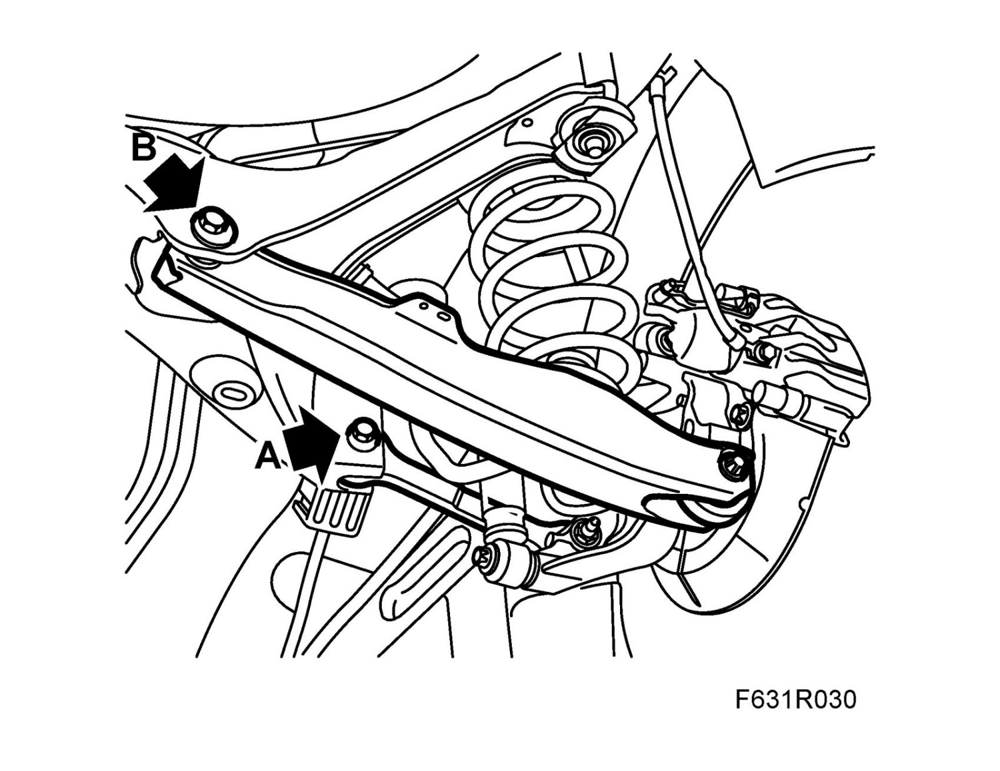
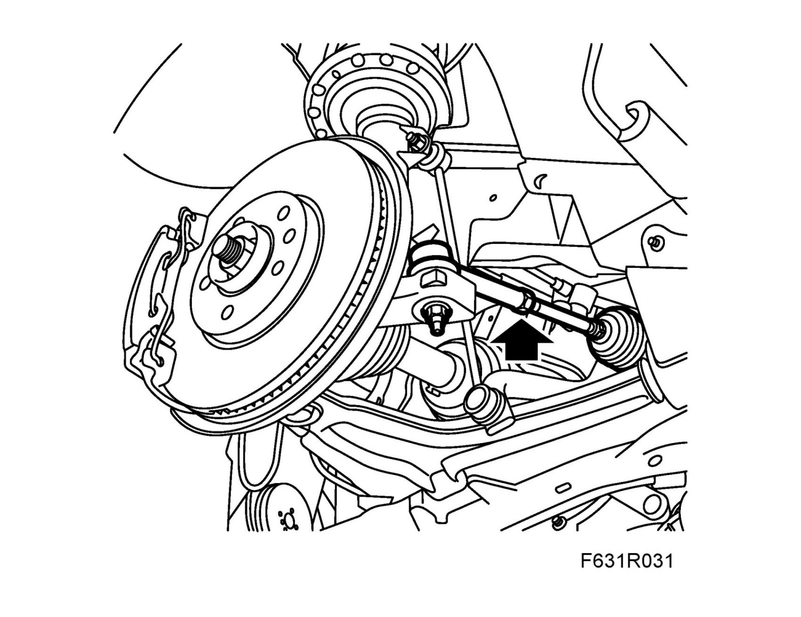

Procedures
Four wheel alignmentUse the equipment for four wheel checking.
The rear wheels must be adjusted before the front wheels. For further information, see Technical description Wheel geometry and Technical data, Wheel geometry
Rear wheels
When setting rear wheel geometry, camber will be affected by toe-in adjustment and vice versa. It is important to follow the instructions carefully during alignment.

A. Adjust toe-in by rotating the off-center screw located in the toe-in link mounting in the subframe.
B. Adjust camber by rotating the off-center screw located in the lower suspension arm mounting in the subframe.
When adjusting rear wheel geometry, remove approximately half of the total error from the side with the most incorrect angle. Then adjust the other angle by approximately half the total error.
Adjust the first angle error by half and so on until both settings are correct.
Tightening torque 75 Nm +60° (55 lbf ft +60°) Hold the bolt and tighten the nut.
Front wheels

- Toe-in is adjusted by lengthening or shortening the track rods.
Toe-in must be adjusted by an equal amount on both left-hand and right-hand track rods to ensure that the steering wheel spokes will be positioned symmetrically.
Tightening torque 70 Nm (52 lbf ft)
Note
Calibration of steering angle sensor must be carried out after realigning the wheels on cars with ESP.